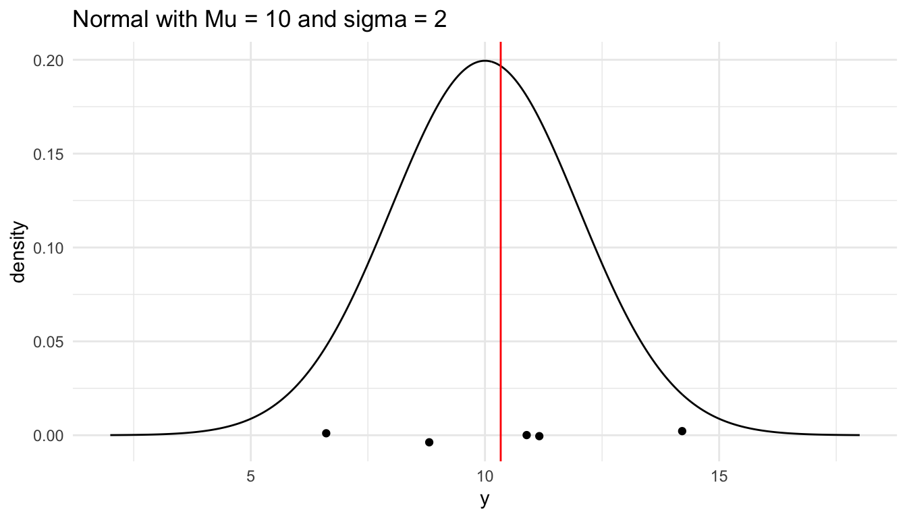
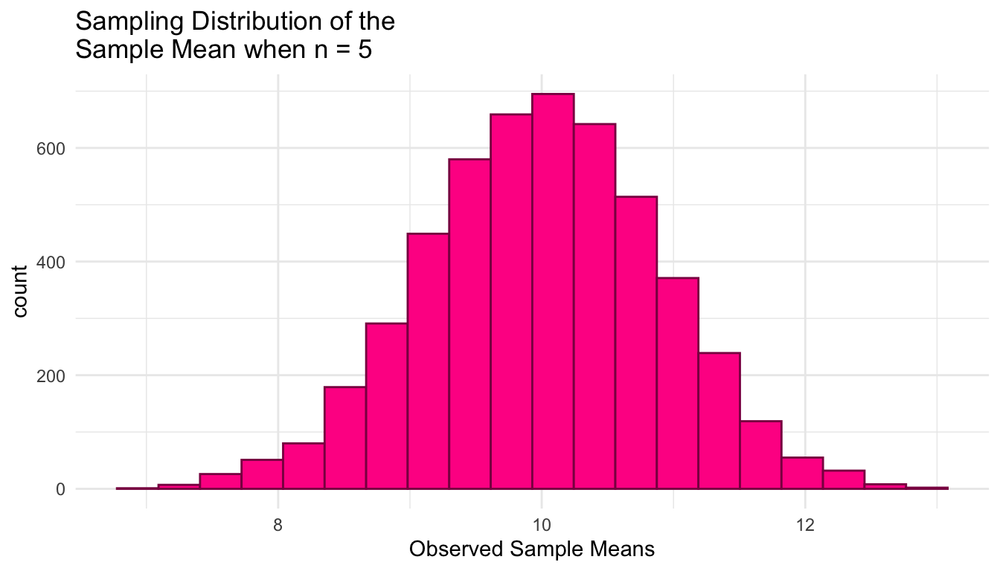
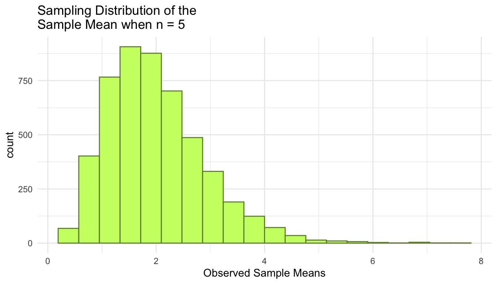

1 Sampling Distributions
The purpose of this section is to investigate sampling distributions through statistical simulation. Before we dive into details, you should load in the tidyverse library, which we will use to make some plots and obtain some statistical summaries of samples.
Goals:
Given a population model for the simulation, construct the sampling distribution of any sample statistic (sample mean, sample median, sample maximum, etc.).
Explain how a change in sample size affects the center and spread of a sampling distribution.
Match properties of the simulated sampling distribution of the sample mean to the theoretical sampling distribution of the sample mean from MATH/STAT 325.
Lab 1.1: Introduction to Statistical Simulation
Starting a Simulation
To begin a simulation for a sampling distribution of a sample statistic, we need to choose:
a population model for the simulation. Let’s start with Normal(\(\mu\) = 10, \(\sigma^2\) = 4).
a sample size for the simulation. Let’s start with \(n\) = 5.
a calculation for the sample statistic that we are constructing the sampling distribution of. Let’s start with the sample mean, \(\bar{y}\).
Generating a Single Sample Statistic
Carefully look through this code and output to understand the process of generating a single sample from a population and computing a statistic.
In the code below, we simulate five observations from a normal population with mean 10 and standard deviation 2. Note that, when you run the code, you should get a different set of 5 numbers than the ones printed below: it is a random sample, after all!
Next, we compute the sample mean from this sample: this is our sample statistic we are interested in.
# compute the sample mean
sample_mean <- mean(single_sample)
# look at the sample mean
sample_mean
#> [1] 8.902Again, your sample mean should be different!
Finally, we can make a plot of our single sample, along with where the sample mean lies.
# generate a range of values that span the population
plot_df <- tibble(xvals = seq(mu - 4 * sigma, mu + 4 * sigma, length.out = 500)) |>
mutate(xvals_density = dnorm(xvals, mu, sigma))
## plot the population model density curve
ggplot(data = plot_df, aes(x = xvals, y = xvals_density)) +
geom_line() +
theme_minimal() +
## add the sample points from your sample
geom_jitter(data = tibble(single_sample), aes(x = single_sample, y = 0),
width = 0, height = 0.005) +
## add a line for the sample mean
geom_vline(xintercept = sample_mean, colour = "red") +
labs(x = "y", y = "density",
title = "Normal with Mu = 10 and sigma = 2")
Constructing the Sampling Distribution
To simulate the sampling distribution of the sample mean from a normal population with \(\mu\) = 10 and \(\sigma\) = 2 for a sample size of 5, we need to repeat the above steps many, many, many times. We can do so by
Writing a function that computes the sample mean and then
Mapping through that function a large number of times and then
Plotting the large number of sample means to examine the characteristics of the resulting distribution.
First, let’s write the function that will compute the sample mean with a given sample size from a normal population model with a given mean and standard deviation.
n <- 5 # sample size
mu <- 10 # population mean
sigma <- 2 # population standard deviation
generate_normal_mean <- function(mu, sigma, n) {
single_sample <- rnorm(n, mu, sigma)
sample_mean <- mean(single_sample)
return(sample_mean)
}
## test function once:
generate_normal_mean(mu = mu, sigma = sigma, n = n)
#> [1] 9.804759Next, to generate 5000 sample means, we map through the function:
nsim <- 5000 # number of simulations
## code to map through the function.
## the \(i) syntax says to just repeat the generate_normal_mean function
## nsim times
means <- map_dbl(1:nsim, \(i) generate_normal_mean(mu = mu, sigma = sigma, n = n))
## print some of the 5000 means
## each number represents the sample mean from __one__ sample.
means_df <- tibble(means)
means_df
#> # A tibble: 5,000 × 1
#> means
#> <dbl>
#> 1 9.46
#> 2 9.69
#> 3 9.76
#> 4 11.9
#> 5 10.7
#> 6 8.72
#> # ℹ 4,994 more rowsFinally, we plot the 5000 sample means to see what our sampling distribution of the sample mean (for a sample size of 5) looks like.
ggplot(data = means_df, aes(x = means)) +
geom_histogram(colour = "deeppink4", fill = "deeppink1", bins = 20) +
theme_minimal() +
labs(x = "Observed Sample Means",
title = paste("Sampling Distribution of the \nSample Mean when n =", n))
We can also obtain some summary statistics of the sampling distribution of the sample mean when \(n\) = 5:
And, we can even obtain estimates of the probability that we observe a sample mean larger than 11 by calculating the proportion of our observed sample means that are larger than 11. We can use a similar strategy to estimate the probability that we observe a sample mean less than or equal to 9.5.
# What is the probability that we observe a sample mean larger than 11?
means_df |>
mutate(more_than_11 = if_else(means > 11,
true = 1, false = 0)) |>
summarise(prob_more_than_11 = mean(more_than_11))
#> # A tibble: 1 × 1
#> prob_more_than_11
#> <dbl>
#> 1 0.128
# What is the probability that we observe a sample mean less than or equal to 9.5?
means_df |>
mutate(less_9.5 = if_else(means <= 9.5,
true = 1, false = 0)) |>
summarise(prob_less_9.5 = mean(less_9.5))
#> # A tibble: 1 × 1
#> prob_less_9.5
#> <dbl>
#> 1 0.306Exercise 1. Repeat the construction of the sampling distribution of the sample mean several times. How do the results change (or not)?
Exercise 2. Use the result from Stat 325 to report the theoretical distribution of the sample mean. Use this result to find \(P(\bar{Y}\leq 9.5)\) and \(P(\bar{Y}>11)\) analytically.
Exercise 3. What can we conclude about the sampling distribution of \(\bar{y}\) when taking samples of \(n = 5\) from this population? How do the simulation results compare to the result from Stat 325? Use the plot below in your answer to this question.
theoretical_df <- tibble(xvals = seq(mu - 4 * sigma / sqrt(n),
mu + 4 * sigma / sqrt(n),
length.out = 500)) |>
mutate(xvals_density = dnorm(xvals, mu, sigma / sqrt(n)))
ggplot(data = means_df, aes(x = means)) +
geom_histogram(colour = "deeppink4", fill = "deeppink1", bins = 20,
aes(y = after_stat(density))) +
theme_minimal() +
labs(x = "Observed Sample Means",
title = paste("Sampling Distribution of the \nSample Mean when n =", n)) +
geom_line(data = theoretical_df, aes(x = xvals, y = xvals_density))Exercise 4. Increase the sample size to 50 and then reconstruct the sampling distribution of the sample mean for \(n = 50\). How do the results (mean, standard deviation, and probabilities) change? Do the changes make sense and do they match the theoretical result from Stat 325?
Lab 1.2: Samp. Dist. with a Non-Normal Population
Now consider an Exponential(\(\lambda\) = 0.5) population. Go back to a sample size of \(n = 5\) and continue calculating the sample mean, \(\bar{y}\). Before beginning, you should make sure to load in the tidyverse library again so that we can make some plots:
The code below modifies the code from the previous section on a normal population model to reflect the updated exponential population model. Copy the code and run it in your own R session to obtain the graph of the exponential population model with a random sample of \(n = 5\) observations.
n <- 5 # sample size
lambda <- 0.5
mu <- 1 / lambda # population mean
sigma <- sqrt(1 / lambda ^ 2) # population standard deviation
# generate a random sample of n observations from a normal population
single_sample <- rexp(n, lambda) |> round(2)
# look at the sample
single_sample
# compute the sample mean
sample_mean <- mean(single_sample)
# look at the sample mean
sample_mean
# generate a range of values that span the population
plot_df <- tibble(xvals = seq(0, mu + 4 * sigma, length.out = 500)) |>
mutate(xvals_density = dexp(xvals, lambda))
## plot the population model density curve
ggplot(data = plot_df, aes(x = xvals, y = xvals_density)) +
geom_line() +
theme_minimal() +
## add the sample points from your sample
geom_jitter(data = tibble(single_sample), aes(x = single_sample, y = 0),
width = 0, height = 0.005) +
## add a line for the sample mean
geom_vline(xintercept = sample_mean, colour = "red") +
labs(x = "y", y = "density",
title = "Exponential with Lambda = 0.5")Now that we have an idea of what the population model looks like and we can generate a single sample from this model (along with the sample mean), we can repeat the generation of the sample mean thousands of times to construct the sampling distribution of the sample mean when \(n = 5\) for the exponential model.
n <- 5 # sample size
lambda <- 0.5
mu <- 1 / lambda # population mean
sigma <- sqrt(1 / lambda ^ 2) # population standard deviation
generate_exp_mean <- function(lambda, n) {
single_sample <- rexp(n, lambda)
sample_mean <- mean(single_sample)
return(sample_mean)
}
## test function once:
generate_exp_mean(lambda = lambda, n = n)
#> [1] 2.833337
nsim <- 5000 # number of simulations
means <- map_dbl(1:nsim, \(i) generate_exp_mean(lambda = lambda, n = n))
## print some of the 5000 means
## each number represents the sample mean from __one__ sample.
means_df <- tibble(means)
means_df
#> # A tibble: 5,000 × 1
#> means
#> <dbl>
#> 1 2.15
#> 2 2.90
#> 3 1.97
#> 4 1.87
#> 5 1.80
#> 6 1.60
#> # ℹ 4,994 more rows
ggplot(data = means_df, aes(x = means)) +
geom_histogram(colour = "darkolivegreen4", fill = "darkolivegreen1", bins = 20) +
theme_minimal() +
labs(x = "Observed Sample Means",
title = paste("Sampling Distribution of the \nSample Mean when n =", n))
Exercise 1. In the code that generated the graph for the population model of the exponential distribution, along with the single sample and its mean, I modified the code from the normal distribution population model to examine a single sample from the known population, but for the Exponential population. What are some changes I made and why?
Exercise 2. Now look at the sampling distribution of the sample mean when \(n = 5\) for the exponential population model. Summarise what you notice about the sampling distribution of \(\bar{y}\) when taking a sample of size \(n = 5\) from an Exponential(\(\lambda\) = 0.5) population.
Exercise 3. Increase the sample size to \(n = 50\). What do you notice about the sampling distribution of \(\bar{y}\) now? Why has the shape of the sampling distribution changed?
Exercise 4. In general, what are some other ways you could summarise a sample of data? (i.e., other calculations you could do?)
Lab 1.3: Samp. Dist. of the Sample Minimum
Again, load in the tidyverse library so that we can make some plots!
Let’s return to our original Normal(\(\mu\) = 10, \(\sigma^2\) = 4), but let’s consider a different statistic: the sample minimum. Examine the code that you ran in an earlier lab below.
n <- 5 # sample size
mu <- 10 # population mean
sigma <- 2 # population standard deviation
# generate a random sample of n observations from a normal population
single_sample <- rnorm(n, mu, sigma) |> round(2)
# look at the sample
single_sample
# compute the sample mean
sample_mean <- mean(single_sample)
# look at the sample mean
sample_mean
# generate a range of values that span the population
plot_df <- tibble(xvals = seq(mu - 4 * sigma, mu + 4 * sigma, length.out = 500)) |>
mutate(xvals_density = dnorm(xvals, mu, sigma))
## plot the population model density curve
ggplot(data = plot_df, aes(x = xvals, y = xvals_density)) +
geom_line() +
theme_minimal() +
## add the sample points from your sample
geom_jitter(data = tibble(single_sample), aes(x = single_sample, y = 0),
width = 0, height = 0.005) +
## add a line for the sample mean
geom_vline(xintercept = sample_mean, colour = "red") +
labs(x = "y", y = "density",
title = "Normal with Mu = 10 and sigma = 2")Exercise 1. Modify the code so that, instead of calculating the sample mean as the sample statistic, you calculate the sample minimum as the sample statistic. Then, re-run the code so that you better understand what the sampling distribution of the sample minimum might look like.
Exercise 2. Predict what might happen next! That is, based on what you’ve seen by re-running the code above, where do you expect the center of the sampling distribution of the sample minimum to be relative to 10? Do you expect the sampling distribution of the sample minimum to overlap with the value 10 at all (if \(n = 5\)).
Exercise 3. Modify the code below so that you generate the sampling distribution of the sample minimum instead of the sample mean.
n <- 5 # sample size
mu <- 10 # population mean
sigma <- 2 # population standard deviation
generate_samp_mean <- function(mu, sigma, n) {
single_sample <- rnorm(n, mu, sigma)
sample_mean <- mean(single_sample)
return(sample_mean)
}
## test function once:
generate_samp_mean(mu = mu, sigma = sigma, n = n)
nsim <- 5000 # number of simulations
## code to map through the function.
## the \(i) syntax says to just repeat the generate_samp_mean function
## nsim times
means <- map_dbl(1:nsim, \(i) generate_samp_mean(mu = mu, sigma = sigma, n = n))
## print some of the 5000 means
## each number represents the sample mean from __one__ sample.
means_df <- tibble(means)
means_df
ggplot(data = means_df, aes(x = means)) +
geom_histogram(colour = "deeppink4", fill = "deeppink1", bins = 20) +
theme_minimal() +
labs(x = "Observed Sample Means",
title = paste("Sampling Distribution of the \nSample Mean when n =", n))
means_df |>
summarise(mean_samp_dist = mean(means),
var_samp_dist = var(means),
sd_samp_dist = sd(means))
means_df |>
mutate(more_than_11 = if_else(means > 11,
true = 1, false = 0)) |>
summarise(prob_more_than_11 = mean(more_than_11))
means_df |>
mutate(less_9.5 = if_else(means <= 9.5,
true = 1, false = 0)) |>
summarise(prob_less_9.5 = mean(less_9.5))Exercise 4. Summarise what you notice about the sampling distribution. How does it compare to the sampling distribution of the sample mean? Does that make sense? Why or why not?
Exercise 5. Report the probability that the sample minimum is less than or equal to 9.5. How does it compare to the probability that the sample mean is less than or equal to 9.5? Does that make sense? Why or why not?
Exercise 6. Increase the sample size to 50. Summarize how the sampling distribution of the sample minimum when \(n = 50\) differs from when \(n = 5\).
Mini Project 1: Sampling Distribution of the Sample Minimum and Maximum
On our second day of class, we conducted a simulation to investigate the sampling distribution of the sample minimum (\(Y_{min}\)) when taking samples of \(n = 5\) observations from a Normal(\(\mu = 10, \sigma^2 = 4\)) population. For your recap of that day, you investigated the sampling distribution of the sample maximum (\(Y_{max}\)) from the same population (using the same sample size).
Many of you noticed that, in this situation, SE(\(Y_{min} \approx\) SE(\(Y_{max}\)), and many of you provided great explanations of why you thought that was true. The purpose of this mini-project assignment is for you to investigate this phenomenon to see if it is a result that holds more generally.